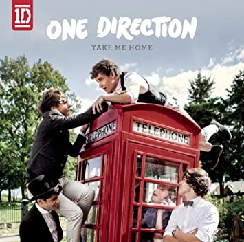

Todo comenzó en un casting de canto en "The X-Factor", dónde 5 chicos entre los 16 y los 18 fueron a dar su audición. Uno de los jurados era Simon Cowell, quién vió talento y futuro en ellos como banda y los juntó. Ellos siguieron en la competencia juntos, y mientras cantaban y salían en la television se iban haciendo más y más conocidos, hasta el punto de tener el apoyo de mucha gente y llegar a tener fans. Aunque no ganaron la competencia de bandas, ellos desidieron seguir juntos. Fue así, que en 2011, sacaron su primer tema llamado "What Makes You Beautifull".
Álbumes
Take me Home (2012)
Pero la historia no termina ahí, luego de ello, One Direction realizó sendos conciertos en Europa, Oceanía y América para promocionar Up All Night. Al año siguiente, en 2012, la banda lanzó su segundo disco de estudio titulado Take Me Home, y al igual que el anterior debutó en el primer puesto del Billboard 200 e hizo que One Direction sea el primer grupo masculino y el segundo en general que logra llegar a dicha ubicación con sus dos primeras producciones, después de Danity Kane.
One Direction llegó así al año 2013 con un reconocimiento ganado a nivel mundial debido al éxito de sus canciones y al carisma y poder de convocatoria de sus integrantes. Es así que ese año presentó su tercer disco, Midnight Memories, que fue el más vendido de ese año en el Reino Unido.
Four, su cuarto disco, presentó los sencillos Steal My Girl y Night Changes, dos de los éxitos más conocidos de la banda.
Las fans son una gran parte del trabajo de ser famoso, ya que sin ellos no serias reconocido. Así como las fans aman tanto a sus ídolos y les gusta verlos felices, arman proyectos sorpresa para ellos. Y así fue en Italia... En 2014 One Direction estaba dando una función y la gente presente ese día organizó un proyecto para ellos, este constaba que cuándo los chicos cantaran "Right Now", todo el público iba a levantar carteles de colores para así formar la bandera de Italia y hacer sentir a estos 5 chicos más que bienvenidos a su país.
apriete la imagen para ver el proyecto
Pero la historia no termina ahí, luego de ello, One Direction realizó sendos conciertos en Europa, Oceanía y América para promocionar Up All Night. Al año siguiente, en 2012, la banda lanzó su segundo disco de estudio titulado Take Me Home, y al igual que el anterior debutó en el primer puesto del Billboard 200 e hizo que One Direction sea el primer grupo masculino y el segundo en general que logra llegar a dicha ubicación con sus dos primeras producciones, después de Danity Kane.
One Direction llegó así al año 2013 con un reconocimiento ganado a nivel mundial debido al éxito de sus canciones y al carisma y poder de convocatoria de sus integrantes. Es así que ese año presentó su tercer disco, Midnight Memories, que fue el más vendido de ese año en el Reino Unido.
Four, su cuarto disco, presentó los sencillos Steal My Girl y Night Changes, dos de los éxitos más conocidos de la banda.
En marzo de 2015, One Direction sufrió un cambio radical y sentido por sus fans con la partida de Zayn Malik, popular cantante que decidió dar un paso al costado para embarcarse en un proyecto en solitario.
Así, One Direction se quedó con cuatro integrantes originales (Harry Styles, Liam Payne, Louis Tomlinson y Niall Horan) para continuar el proyecto.
La banda se alista para sacar su quinto – y probablemente último – disco Made in the A.M, antes de tomarse un descanso indefinido a partir de 2016. Los miembros de One Direction aprovecharán ese tiempo libre para llevar a cabo sus proyectos personales y actividades paralelas, mientras se espera la confirmación de una posible vuelta en el futuro. One Direction inició oficialmente el periodo de descanso indefinido que anunció a mediados de 2015 tras presentarse el 13 de diciembre en el programa británico The X Factor.